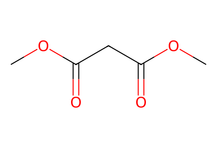
COC(=O)CC(=O)OCAll experimentally obtained compounds drawn in main Scheme2 and Table1, including failed-route isolated precursors and side products. Main-only source; SI-only branches in notes24/32 remain outside available coverage. Facts compiled deterministically; independent review pending.
完整 JSON · 逐步 CSV · 路线序列 · SDF · HRMS 核对
| 事件 | 分子连接 | 报告产率 | Canonical reaction SMILES |
|---|---|---|---|
| S01 | 4 → 5 | 5: 92% | COC(=O)CC(=O)OC>>COC(=O)C(=[N+]=[N-])C(=O)OC |
| S02 | 5 + TMS-acetylene → 6 | not reported | C#C[Si](C)(C)C.COC(=O)C(=[N+]=[N-])C(=O)OC>>COC(=O)C1(C(=O)OC)C=C1[Si](C)(C)C |
| S03 | 6 → 7 | 7: 54% | COC(=O)C1(C(=O)OC)C=C1[Si](C)(C)C>>C[Si](C)(C)C1=CC1(CO)CO |
| S04 | 7 → 8 | 8: 88% | C[Si](C)(C)C1=CC1(CO)CO>>OCC1(CO)C=C1 |
| S05 | 8 → 9 | 9: 78% | OCC1(CO)C=C1>>CC(C)(C)[Si](C)(C)OCC1(CO)C=C1 |
| S06 | 9 + A → 10 | 10: 77% | CC(C)(C)[Si](C)(C)OCC1(CO)C=C1.COC(=O)CC(=O)Nc1ccccc1I>>COC(=O)C(CC1(CO[Si](C)(C)C(C)(C)C)C=C1)C(=O)Nc1ccccc1I |
| B01 | 9 + ethylene → 11 | 11: 48% | C=C.CC(C)(C)[Si](C)(C)OCC1(CO)C=C1>>C=CC(C=C)(CO)CO[Si](C)(C)C(C)(C)C |
| B02 | 10 + B → 12 | 12: 94% | COC(=O)C(CC1(CO[Si](C)(C)C(C)(C)C)C=C1)C(=O)Nc1ccccc1I.C[Si](C)(C)C#CI1OC(=O)c2ccccc21>>C#CC(CC1(CO[Si](C)(C)C(C)(C)C)C=C1)(C(=O)Nc1ccccc1I)C(=O)OC |
| S07 | 10 + ethylene → 14 | 14: 94% | C=C.COC(=O)C(CC1(CO[Si](C)(C)C(C)(C)C)C=C1)C(=O)Nc1ccccc1I>>C=CC(C=C)(CO[Si](C)(C)C(C)(C)C)CC(C(=O)Nc1ccccc1I)C(=O)OC |
| S08 | 14 + B → 15 | 15: 91% | C=CC(C=C)(CO[Si](C)(C)C(C)(C)C)CC(C(=O)Nc1ccccc1I)C(=O)OC.C[Si](C)(C)C#CI1OC(=O)c2ccccc21>>C#CC(CC(C=C)(C=C)CO[Si](C)(C)C(C)(C)C)(C(=O)Nc1ccccc1I)C(=O)OC |
| S09 | 15 → 16 | 16: 77% | C#CC(CC(C=C)(C=C)CO[Si](C)(C)C(C)(C)C)(C(=O)Nc1ccccc1I)C(=O)OC>>C=CC(C=C)(CO[Si](C)(C)C(C)(C)C)CC1(C(=O)OC)C(=C)c2ccccc2NC1=O |
| B03 | 15 → 16 + 17 | 16: 24%; 17: 12% | C#CC(CC(C=C)(C=C)CO[Si](C)(C)C(C)(C)C)(C(=O)Nc1ccccc1I)C(=O)OC>>C#CC(CC(C=C)(C=C)CO[Si](C)(C)C(C)(C)C)(C(=O)Nc1ccccc1)C(=O)OC.C=CC(C=C)(CO[Si](C)(C)C(C)(C)C)CC1(C(=O)OC)C(=C)c2ccccc2NC1=O |
| S10 | 16 → 18 | 18: 84% | C=CC(C=C)(CO[Si](C)(C)C(C)(C)C)CC1(C(=O)OC)C(=C)c2ccccc2NC1=O>>C=CC(C=C)(CO)CC1(C(=O)OC)C(=C)c2ccccc2NC1=O |
| S11 | 18 → 19 | 19: 85% | C=CC(C=C)(CO)CC1(C(=O)OC)C(=C)c2ccccc2NC1=O>>C=CC(C=C)(C=O)CC1(C(=O)OC)C(=C)c2ccccc2NC1=O |
| S12 | 19 + 20a + 20b → 21 | 21: 53% | C=CC(C=C)(C=O)CC1(C(=O)OC)C(=C)c2ccccc2NC1=O.C=CCNCC(=O)O.C=CCNCC(=O)[O-].[Na+]>>C=CCN1CC[C@]23c4ccccc4NC(=O)[C@@]2(C(=O)OC)CC(C=C)(C=C)[C@H]13 |
| B04 | 19 + 20a → 21 + 23 | 21: 35% | C=CC(C=C)(C=O)CC1(C(=O)OC)C(=C)c2ccccc2NC1=O.C=CCNCC(=O)O>>C=CC1(C=C)CC2(C(=O)OC)C(=O)Nc3ccccc3C2=CC1O.C=CCN1CC[C@]23c4ccccc4NC(=O)[C@@]2(C(=O)OC)CC(C=C)(C=C)[C@H]13 |
| S13 | 21 → 1 | 1: 74% | C=CCN1CC[C@]23c4ccccc4NC(=O)[C@@]2(C(=O)OC)CC(C=C)(C=C)[C@H]13>>C=C[C@]12C=CCN3CC[C@@]4(c5ccccc5NC(=O)[C@@]4(C(=O)OC)C1)[C@@H]32 |
| X01 | 19 + 20a + 20b → 21 | 21: 47% | C=CC(C=C)(C=O)CC1(C(=O)OC)C(=C)c2ccccc2NC1=O.C=CCNCC(=O)O.C=CCNCC(=O)[O-].[Na+]>>C=CCN1CC[C@]23c4ccccc4NC(=O)[C@@]2(C(=O)OC)CC(C=C)(C=C)[C@H]13 |
| T03 | 15 → 16 + 17 | 16: 26%; 17: 28% | C#CC(CC(C=C)(C=C)CO[Si](C)(C)C(C)(C)C)(C(=O)Nc1ccccc1I)C(=O)OC>>C#CC(CC(C=C)(C=C)CO[Si](C)(C)C(C)(C)C)(C(=O)Nc1ccccc1)C(=O)OC.C=CC(C=C)(CO[Si](C)(C)C(C)(C)C)CC1(C(=O)OC)C(=C)c2ccccc2NC1=O |
| T04 | 15 → 16 | 16: 44% | C#CC(CC(C=C)(C=C)CO[Si](C)(C)C(C)(C)C)(C(=O)Nc1ccccc1I)C(=O)OC>>C=CC(C=C)(CO[Si](C)(C)C(C)(C)C)CC1(C(=O)OC)C(=C)c2ccccc2NC1=O |
| T05 | 15 → 16 + 17 | 16: 43%; 17: 18% | C#CC(CC(C=C)(C=C)CO[Si](C)(C)C(C)(C)C)(C(=O)Nc1ccccc1I)C(=O)OC>>C#CC(CC(C=C)(C=C)CO[Si](C)(C)C(C)(C)C)(C(=O)Nc1ccccc1)C(=O)OC.C=CC(C=C)(CO[Si](C)(C)C(C)(C)C)CC1(C(=O)OC)C(=C)c2ccccc2NC1=O |
| T07 | 15 → 16 | 16: 26% | C#CC(CC(C=C)(C=C)CO[Si](C)(C)C(C)(C)C)(C(=O)Nc1ccccc1I)C(=O)OC>>C=CC(C=C)(CO[Si](C)(C)C(C)(C)C)CC1(C(=O)OC)C(=C)c2ccccc2NC1=O |
| T08 | 15 → 16 | 16: 40% | C#CC(CC(C=C)(C=C)CO[Si](C)(C)C(C)(C)C)(C(=O)Nc1ccccc1I)C(=O)OC>>C=CC(C=C)(CO[Si](C)(C)C(C)(C)C)CC1(C(=O)OC)C(=C)c2ccccc2NC1=O |
| T09 | 15 → 16 | 16: 66% | C#CC(CC(C=C)(C=C)CO[Si](C)(C)C(C)(C)C)(C(=O)Nc1ccccc1I)C(=O)OC>>C=CC(C=C)(CO[Si](C)(C)C(C)(C)C)CC1(C(=O)OC)C(=C)c2ccccc2NC1=O |
| T10 | 15 → 16 | 16: 70% | C#CC(CC(C=C)(C=C)CO[Si](C)(C)C(C)(C)C)(C(=O)Nc1ccccc1I)C(=O)OC>>C=CC(C=C)(CO[Si](C)(C)C(C)(C)C)CC1(C(=O)OC)C(=C)c2ccccc2NC1=O |

COC(=O)CC(=O)OC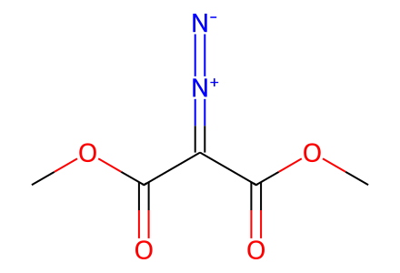
COC(=O)C(=[N+]=[N-])C(=O)OC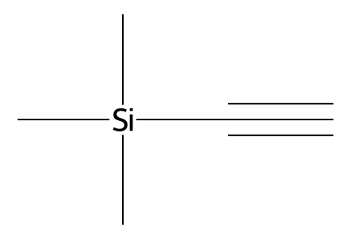
C#C[Si](C)(C)C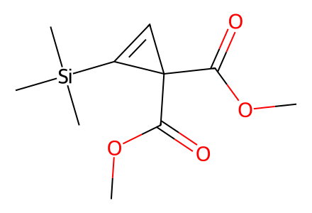
COC(=O)C1(C(=O)OC)C=C1[Si](C)(C)C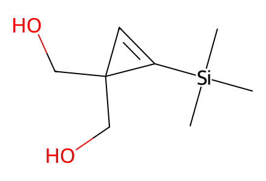
C[Si](C)(C)C1=CC1(CO)CO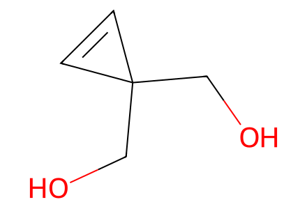
OCC1(CO)C=C1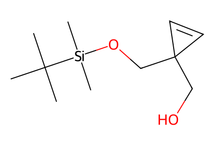
CC(C)(C)[Si](C)(C)OCC1(CO)C=C1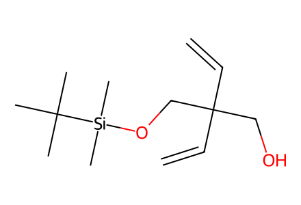
C=CC(C=C)(CO)CO[Si](C)(C)C(C)(C)C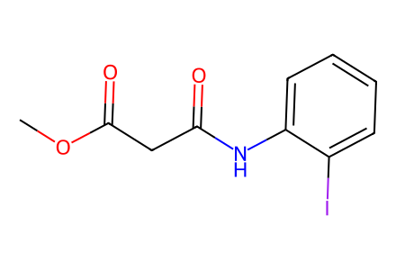
COC(=O)CC(=O)Nc1ccccc1I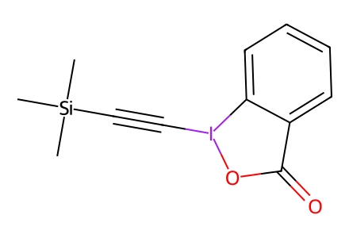
C[Si](C)(C)C#CI1OC(=O)c2ccccc21
C=C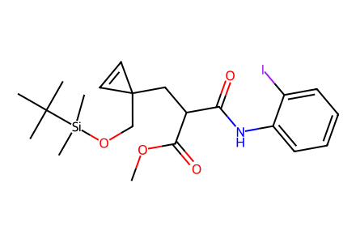
COC(=O)C(CC1(CO[Si](C)(C)C(C)(C)C)C=C1)C(=O)Nc1ccccc1I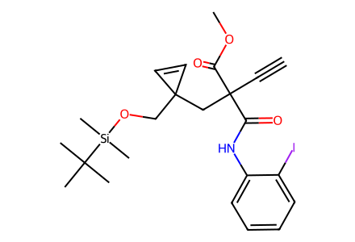
C#CC(CC1(CO[Si](C)(C)C(C)(C)C)C=C1)(C(=O)Nc1ccccc1I)C(=O)OC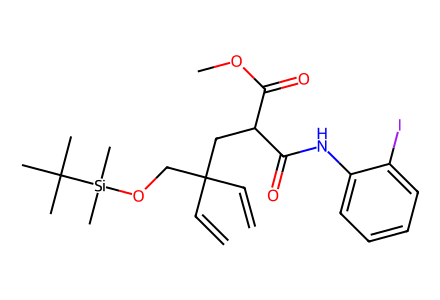
C=CC(C=C)(CO[Si](C)(C)C(C)(C)C)CC(C(=O)Nc1ccccc1I)C(=O)OC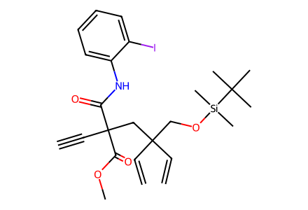
C#CC(CC(C=C)(C=C)CO[Si](C)(C)C(C)(C)C)(C(=O)Nc1ccccc1I)C(=O)OC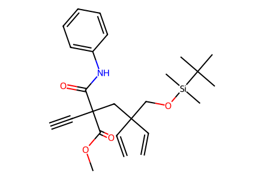
C#CC(CC(C=C)(C=C)CO[Si](C)(C)C(C)(C)C)(C(=O)Nc1ccccc1)C(=O)OC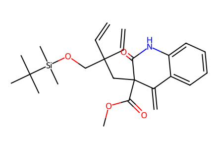
C=CC(C=C)(CO[Si](C)(C)C(C)(C)C)CC1(C(=O)OC)C(=C)c2ccccc2NC1=O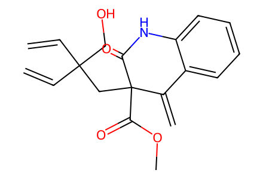
C=CC(C=C)(CO)CC1(C(=O)OC)C(=C)c2ccccc2NC1=O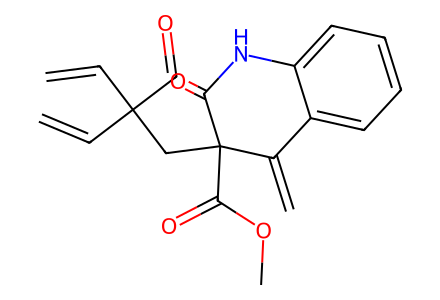
C=CC(C=C)(C=O)CC1(C(=O)OC)C(=C)c2ccccc2NC1=O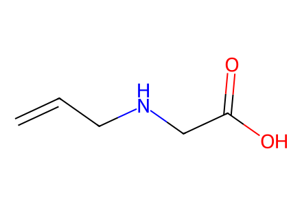
C=CCNCC(=O)O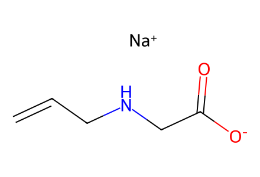
C=CCNCC(=O)[O-].[Na+]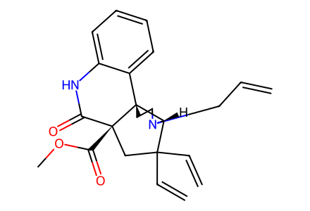
C=CCN1CC[C@]23c4ccccc4NC(=O)[C@@]2(C(=O)OC)CC(C=C)(C=C)[C@H]13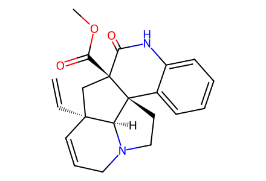
C=C[C@]12C=CCN3CC[C@@]4(c5ccccc5NC(=O)[C@@]4(C(=O)OC)C1)[C@@H]32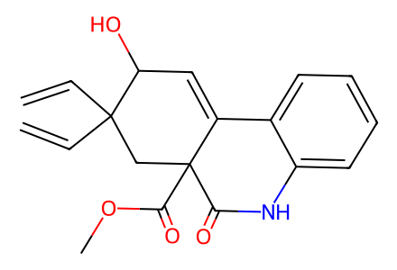
C=CC1(C=C)CC2(C(=O)OC)C(=O)Nc3ccccc3C2=CC1O